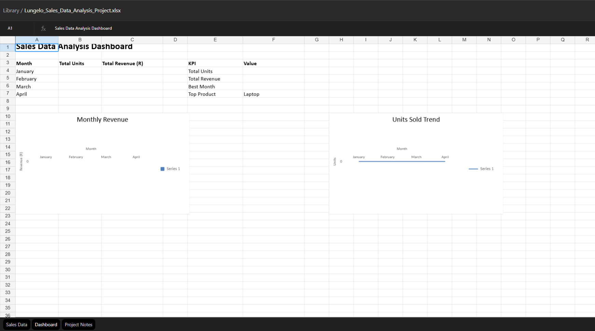

DATA ANALYSIS • EXCEL
Sales Data Analysis Dashboard
A guided Excel analytics project that turns raw electronics sales records into monthly summaries, KPIs and visual trends for business decision-making.

What I worked on
- Monthly sales and revenue summaries
- KPI calculations and trend analysis
- Excel formulas, charts and dashboard layout
- Management-friendly reporting structure
Project file
Open the original Excel workbook to inspect the data and dashboard.
Download Excel workbook